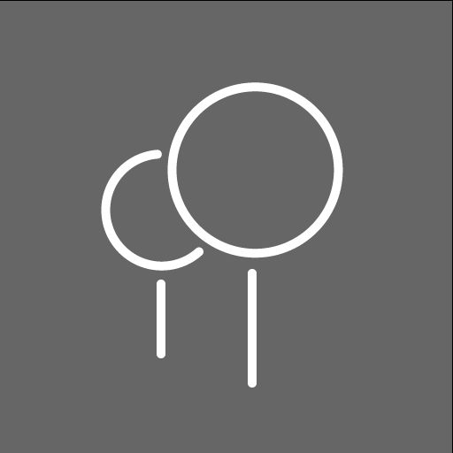
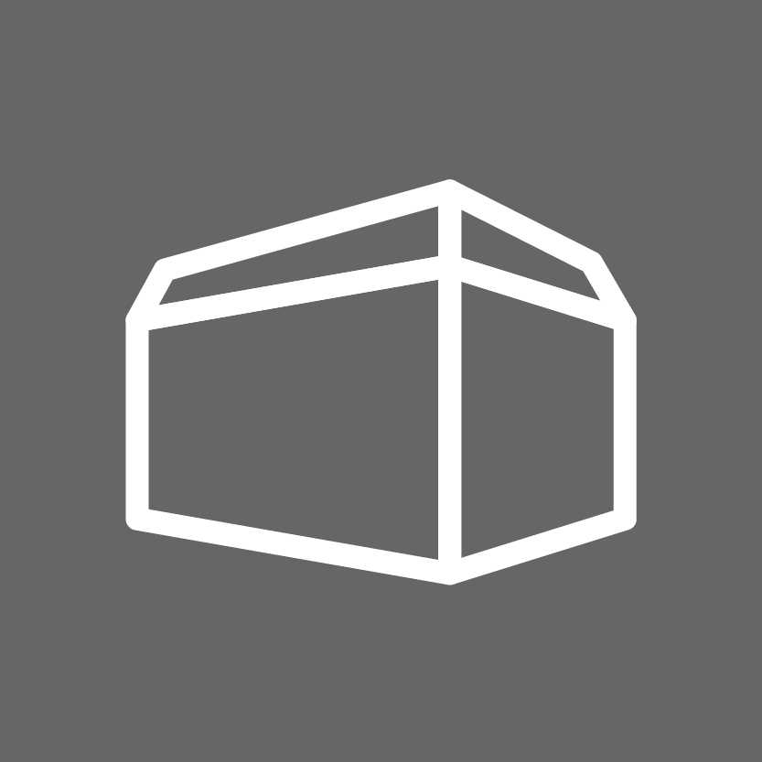

Povolenia sú nutné na najlepšie zobrazenie modelu.
Povolenie GPS lokácie slúži na presné umistnenie modela do križovatky
a povolenie kamery na zobrazenie modela v mobilnom zariadení.
Táto stránka nikdy neukladá a nikdy nebude ukladať informácie polohe či prípadne ukladať záznam z kamery zariadenia.
Prechádzajte sa po námestí
V prípade nejasností alebo problémoch so samotnou stránkou môžete nájsť pomoc v spodnej časti častých otázok a odpovedí,
prípadne nás kontaktovať mailom. Kontaktné údaje sú v spodnej časti stránky.
Ovládanie modelu
Model dokážete ovládať pomocou týchto tlačidiel:
významné prvky modelu

zobrazenie stromov

zobrazenie návrhu budúcej budovy
Môžete si taktiež vybrať, kde si zobrazíte v hornom ľavom rohu:
Křídlovická
GPS pozícia bude zodpovedať umiesteniu priamo na križovatke Křídlovická x Zahradnická.
Vaša poloha
Model sa zobrazí na vašej aktuálnej pozícii.
Po zapnutí tohto režimu sa nastaví pozícia modelu podľa GPS údajov v momente spustenia režimu.
Znovanačítanie tohto režimu znova načíta vašu novú pozíciu (ak sa zmenila), preto odporúčame tento mód počas tohto zobrazenia nemeniť.
Odporúčame zobrazovať model v prípade dostatku miesta kvôli prechádzaniu sa skrz model križovatky.
GPS zhoršuje svoju kvalitu vo vnútorných (indoor) pristoroch, preto odporúčame používať aplikáciu iba na vonkajších priestranstvách.
Časté otázky a odpovede
model sa nezobrazuje vôbec
riešenie 1
model sa nezobrazuje správne
riešenie 2
model neustále mení pozíciu
Skontroluje kvalitu GPS signálu, prípadne ju skúste vykalibrovať, napríklad pomocou aplikácie Google Maps.
O projekte
Tento model vznikol vrámci bakalárskej práce Fakulty informatiky Masarykovej univerzity v roku 2023.